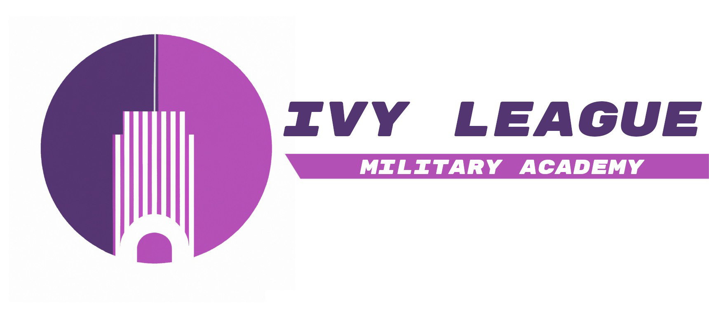

The Ivy League
The Ivy League is a concept I came up with in late October 2023. It was initially inspired by the mobile game Blue Archive, but I have plans to branch it off into its own thing entirely. The stories that I write for this have to do with the Ivy League Military Academy, which is similar in comcept to what Blue Archive tries to achieve, but it's a lot closer to an actual military base and is expanded much further.
Known for their futuristic tech and unfathomable skill, the academy's relatively small number is balanced out by the strength and damage of their weapons and the talent of their athletes, with them currently having the highest success rate of any military club in the world. The academy itself utilizes prototype technologies, including and especially the use of plasma weapons - something not yet researched by other institutions but has been fully sequenced and utilized by the Ivy League. They were the first to come out with a mass-produced short-range plasma pistol, which allows their students to dematerialize any target they come across and not leave a single trace of blood. The combination of talented drivers and superior blades has put the Ivy League seemingly in a position of power - something that their leader, Takina Ivy, has realized and uses to her and the club's advantage.